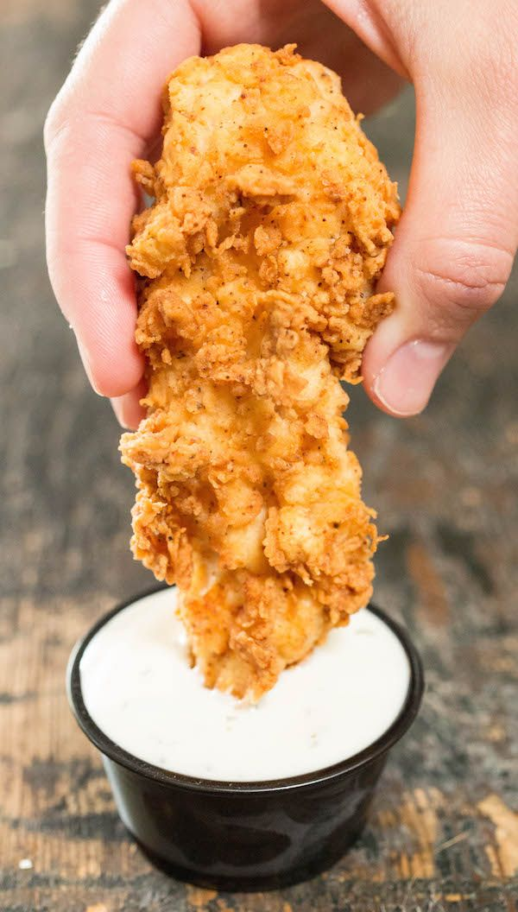

FRIED CHICKEN

Ingredients
- 1 lb Chicken, Tenders
- 1/2 tsp Garlic powder
- 1/4 tsp Onion powder
- 1/2 tsp Black pepper
- 1/8 tsp Cayenne
- 1 1/2 cups Flou
- 1 tsp Salt
- 1 Oil
- 1 Buttermilk
Instructions
- To make your own buttermilk chicken tenders, start by soaking the tenders in the buttermilk for at least 30 minutes up to 4 hours.
- Next, make the breading by stirring the flour and spices together. The extra crispy, crunchy little bits are made by drizzling a little bit of the buttermilk in the flour and stirring with a fork.
- You can fry these in a cast-iron skillet if you don’t have a deep fryer. I like using the deep fryer when possible because it regulates and maintains the temperature really well